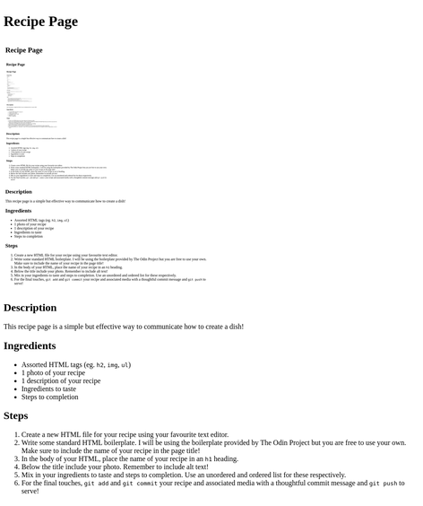

Recipe Page

Description
This recipe page is a simple but effective way to communicate how to create a dish!
Ingredients
- Assorted HTML tags (eg.
h2, img, ul)
- 1 photo of your recipe
- 1 description of your recipe
- Ingredients to taste
- Steps to completion
Steps
- Create a new HTML file for your recipe using your favourite text editor.
- Write some standard HTML boilerplate. I will be using the boilerplate provided by The Odin Project but you are free to use your own. Make sure to include the name of your recipe in the page title!
- In the body of your HTML, place the name of your recipe in an
h1 heading.
- Below the title include your photo. Remember to include alt text!
- Mix in your ingredients to taste and steps to completion. Use an unordered and ordered list for these respectively.
- For the final touches,
git add and git commit your recipe and associated media with a thoughtful commit message and git push to serve!